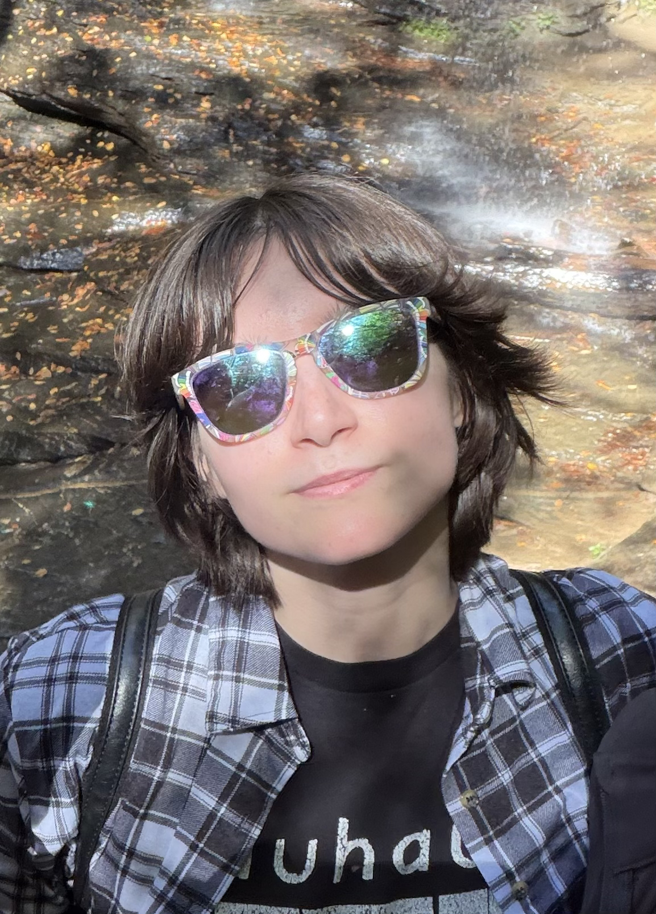

About Me...
Huzzah! You have found my portfolio; this elates me.
The name's Juno Webb. I have been drawing ever since my motor skills allowed me to do so.
I am self-taught. I have been intentionally developing my skills for almost a decade.
My main medium for commissioned work is digital. I specialize in dreamy, character-focused illustrations, portraiture, and character design.
Lightning round! I am a cat lover, I love video games (the Hollow Knight and NieR series are both my favorites!), and I am working on a manuscript that will transform into a graphic novel one day. It is a grand story that tackles the concept of godhood, the power of outer space, and what it means to be family. Yes, I thought of it when I was 12 and still refuse to let go of it.
If you look to the right, the timelapse features one of the characters from the story. No genAI here! All organic.
If I have tickled your fancy, I highly suggest traveling to my Contact page. I promise I don't bite!